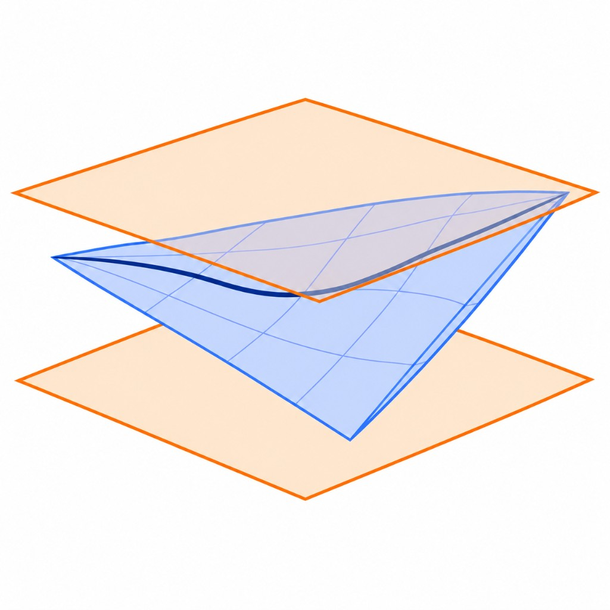
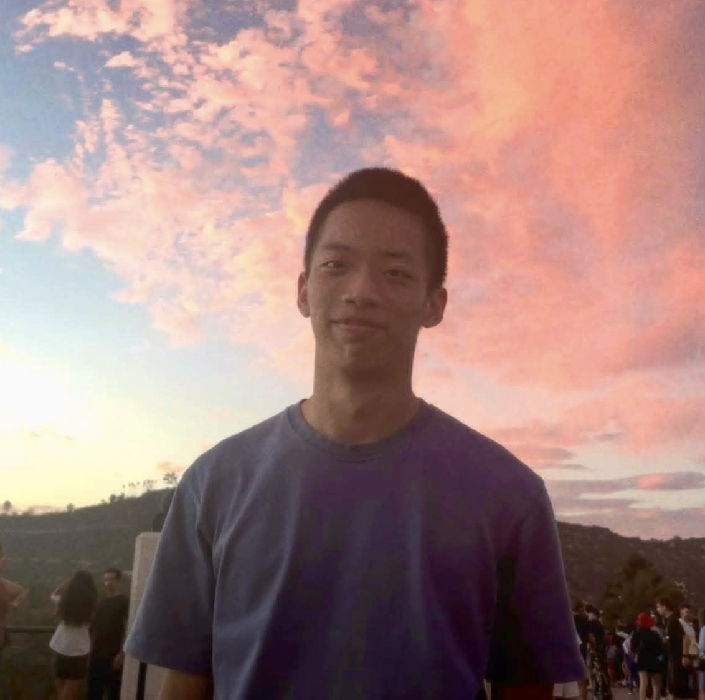
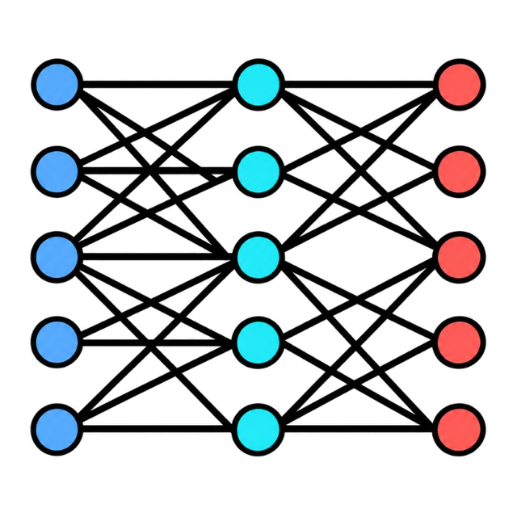
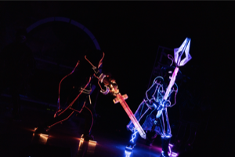

NeurIPS AI for Science Workshop 2026 · Poster
I am Ryan Hsiang, a senior from National Taiwan University (NTU) majoring in Electrical Engineering. My research interests lie in machine learning for math and science. I am an undergraduate researcher at Caltech's AI for Science Lab, mentored by Prof. Anima Anandkumar and Dr. Robert Joseph George, where I work on formal mathematical reasoning and neural operators.
Outside of research, I have extensive experience in software development through various side projects and courses. In particular, I led a group of students at NTUEE to develop the LightDance Editor, a full-stack web application for light and dance choreography built with Rust, Blender, and MySQL.


NeurIPS AI for Science Workshop 2026 · Poster


Developed a full-stack web application using Rust, Blender, and MySQL to design and simulate light patterns and effects for 9 dancers and 18 props. Designed LED- and fiber-embedded costumes for each dancer, controlled via Raspberry Pi devices connected to a WebSocket server for real-time synchronization. Implemented dynamic moving light effects, such as a spinning orb and a large energy pulse, using JavaScript.